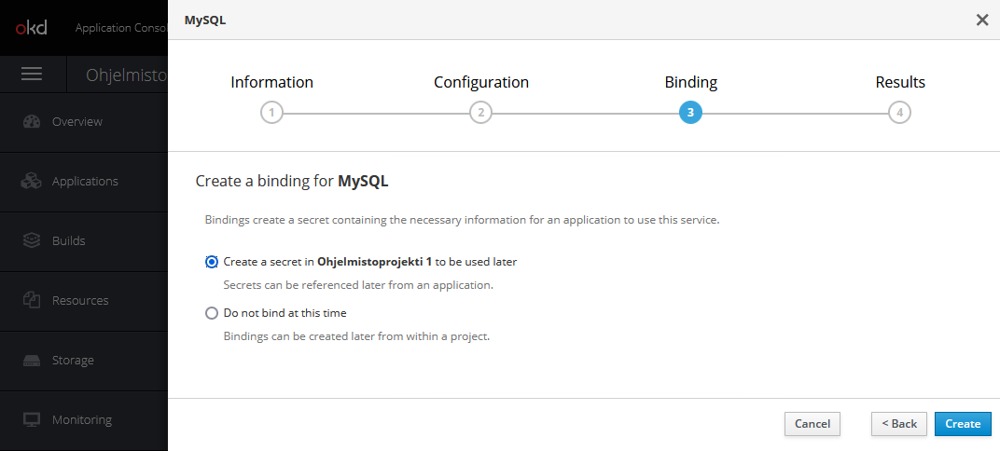
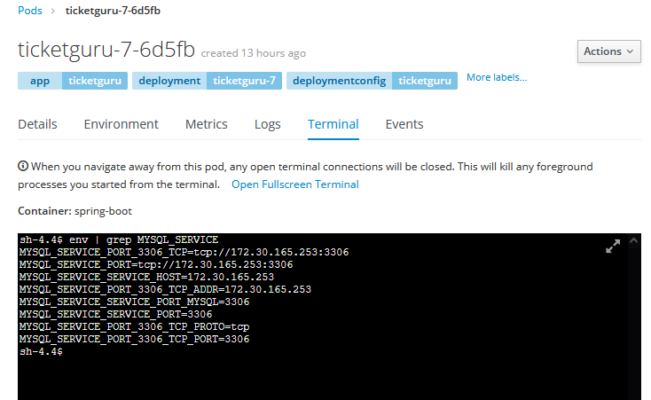
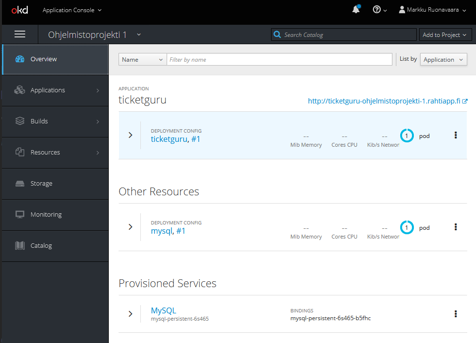
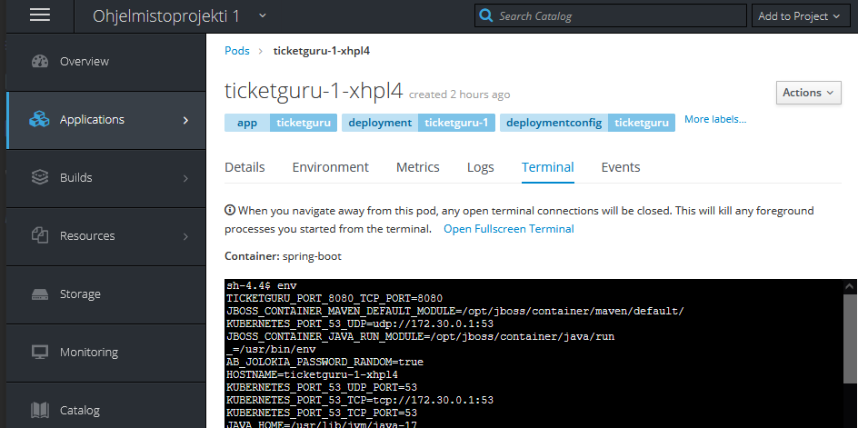

Spring Boot -palvelun julkaiseminen Rahti-ympäristössä
Johdanto
Tässä ohjeessa käydään läpi Spring-palvelun julkaisu Rahti-palvelussa.
Oletuksena on, että julkaistavassa palvelussa on Spring-palvelin sekä relaatiotietokanta. Julkaisu tehdään seuraavassa esimerkissä vaiheittain:
- Rahti-projektin luonti
- Tietokantapalvelun luonti
- Spring palvelimen julkaisu ilman ulkoista tietokantaa
- Spring-palvelimen konfigurointi käyttämään ulkoista tietokantapalvelua
Rahti-projektin luonti
Jotta Rahti-palvelua voi käyttää, pitää sen olla otettuna käyttöön MyCSC projektissa ja itse Rahti-palveluun pitää olla määriteltynä Rahti-projekti.
Kirjaudu rahtipalveluun osoitteessa https://rahti.csc.fi:8443 käyttämällä Haka-kirjautumista. Kirjautumisen jälkeen palvelun etusivu näyttää tältä:

Lisää itsellesi Rahti-projekti painamalla ’Create Project’ painiketta näkymän oikeasta yläreunasta. Anna projektille kuvaava nimi.

MyCSC:n projektinäkymässä näkyvä projektinumero tulee mainita Rahti-projektin kuvauskentässä projektia luotaessa. Tällä mekanismilla palvelun käytöstä syntyneet kulut kohdennetaan määriteltyyn MyCSC projektiin.
Kirjaa projektinumero projektin kommenttikenttään seuraavasti:
csc_project:\<projektinumero>
Korvaa \
Kun painat Create, luodaan Rahti-projekti, johon voidaan määritellä tarvittavia palveluja ja resursseja.
Rahti-projektit ovat henkilökohtaisia, eikä oletuksena näy muille. Projektiin kuitenkin mahdollista lisätä muita käyttäjiä heidän CSC tunnuksellaan Resources/Membership-asetuksen kautta.

Opiskelija voi halutessaan lisätä esimerkiksi kurssin opettajan omaan projektiinsa.
Openshift-komentorivityökalun asennus
Red Hat tarjoaa työkalun nimeltään oc OpenShift ympäristön hallintaan komentoriviltä käsin. Linkki oc-työkalun lataamiseen löytyy Rahti-palvelun hallintanäkymästä.

Linkistä avautuvalta sivustolta voi ladata omalle käyttöjärjestelmälle soveltuvan version. Linkeistä latautuu yksittäinen, suoritettava tiedosto nimeltään oc. Kyseisen tiedoston tulee löytyä käyttöjärjestelmän polusta (esim. Windows-ympäristön PATH-muuttujan määrittämässä sijainnissa) tai sen Spring-sovelluksen hakemistosta, mistä komentoja suoritetaan.
Jatkossa oletetaan, että oc-työkalu on asennettu polkuun.
Asennus Windows-ympäristössä
Kopioi oc.exe johonkin hakemistoon koneellasi (esimerkissä c:\openshift\CLI) ja lisää hakemisto polkuun.
$Path = [Environment]::GetEnvironmentVariable("PATH", "User") + [IO.Path]::PathSeparator + "C:\openshift\CLI"
[Environment]::SetEnvironmentVariable( "Path", $Path, "User" )
Rahti-palveluun kirjautuminen komentorivillä
Jotta oc-komentoja voi antaa, on kirjauduttava Rahti-palveluun komentorivin kautta.
Kirjautumiskomennon saa web käyttöliittymänäkymän oikeasta yläkulmasta oma nimi ja sen alta avautuvasta valikosta Copy Login Command.

Liitä komento leikepöydältä paikallisen koneesi komentoriville ja suorita se projektin juurihakemistossa.
Huom! Jos oc-komento ei ole polussa, voi olla tarpeen antaa komennonlle myös polku, esim.
./oc login https://rahti.csc.fi:8443 -token=...
Tietokantapalvelun luominen
Rahti-projektiin voi lisätä esivalmisteltuja kontteja Browse Catalog-näkymästä:


Tässä esimerkissä käytetään MySQL-vaihtoehtoa.
Huom! Tarjolla olevat Ephemeral-versiot tietokantapalveluista käyttävät pelkästään väliaikaista tallennuskapasiteettia ja kaikki mahdolliset muutokset mm. tietokantaan häviävät samalla, kun kontin suoritus loppuu. Pysyvää tallennusta varten tulee valita "tavallinen" tietokantapalvelukontti ja sille dedikoitu Persistent Volume Claim (PVC) -tallennustila.
Etene luontivelhon näkymässä ’Next’ painikkeella konfigurointikohtaan ja täytä kontille haluamasi asetukset. Asetuksista kannattaa täydentää ainakin: - Database Service Name: Tietokantapalvelun nimi. Tällä nimellä muut kontit löytävät palvelun. - MySQLConnection Username: Käyttäjätunnus sql-palvelimelle kirjautumiseen. - MySQL Connection Password: Salasana sql-palvelimelle kirjautumiseen. - MySQL Database Name. Luotavan tietokannan nimi.

Luontivelho tarjoaa mahdollisuuden luoda tietokannan luonnin yhteydessä salaisuustiedosto (secret), johon talletetaan tietokannan konfiguraatiotiedot.
Salaisuus kannattaa luoda, sillä sitä käyttäen luottamuksellisia konfiguraatiotietoja ei tarvitse tallettaa versionhallintaan, eikä niitä tarvitse lainkaan käsitellä suoraan vaan ne voidaan tarvittaessa lukea salaisuustiedostosta.

Salaisuudet (ja muut vastaavat resurssit) löytyvät Rahti-palvelun web-käyttöliittymästä Resources-valikon alta.

Spring Boot -palvelimen julkaisu
Seuraavassa käydään läpi Spring Boot -palvelimen julkaisu ilman ulkoista tietokantaa.
Tietokannan konfigurointi käsitellään seuraavassa luvussa.
Julkaisu yksityisestä GitHub-repositoriosta
Jotta palvelun julkaisu voidaan automatisoida, sen lähdekoodien on oltava Rahti-palvelun build-työkalujen luettavissa.
Julkiseen GitHub-repositorioon lukuoikeus on kaikilla, siihen ei tarvita eri toimenpiteitä. Yksityisestä repositoriosta julkaisemista varten pitää lukuoikeus järjestää erikseen.
Julkaisua varten kannattaa luoda uusi SSH-avainpari juuri tätä projektia ja repositoriota varten. Henkilökohtaista SSH-avainta ei oel tarkoituksenmukaista käyttää julkaisuun, sillä julkaisuun tarvitaan yksityinen SSH-avain.
Luo sopivaan hakemistoon projektin ulkopuolella uusi avainpari. Salasanaa ei pidä määrittää.
ssh-keygen -C "rahti-build@repo-url" -f id_rahti_build -N=""
-Clisää avaintiedostoon kommentin, josta selviää, mikä avain on kyseessä, tässärahti-build@repo-url-fmäärittää tiedostonimen, tässäid_rahti_build-Nmäärittää, että ei käytetä salasanaa
Lisää julkinen avain GitHub-repositorioon GitHubin käyttöliittymässä. Esimerkissä luodussa avainparissa julkinen avain on tiedostossa nimeltä id_rahti_build.pub.
Title on GitHubin käyttöliittymässä näkyvä nimi avaimelle. Julkaisuun ei tarvita kirjoitusoikeuksia.
Lisää yksityinen SSH-avain projektiin luomalla sitä varten salaisuus. Esimerkissä salaisuuden nimi on id-rahti-build ja yksityinen avain on tiedostossa id_rahti_build.
oc create secret generic id-rahti-build --from-file=ssh-privatekey=id_rahti_build --type=kubernetes.io/ssh-auth
Avainsalaisuus pitää vielä liittää Rahdin builder-palveluun
oc secrets link builder id-rahti-build
Julkaisu Source-to-Image-työkaluilla
Projekti voidaan julkaista repositoriosta Source-to-Image-työkaluilla (S2I), jolloin kaikki tarvittavat resurssit luodaan automaattisesti ja saadaan valmis deployment-konfiguraatio.
Seuraavassa esimerkissä käydään läpi sovelluksen julkaisu S21-työkaluja käyttäen. Kaikki komennot tehdään komentoriviltä.
Luo ensin Rahti-projekti, kirjaudu Rahti-palveluun komentorivillä ja aseta luomasi projekti aktiiviseksi.
oc project myproject
S2I-työkalut tarvitsevat pääsyn projektin repositorioon.
Jos repositorio on julkinen, voit luoda projektiin sovelluksen (application) komennolla:
oc new-app fabric8/s2i-java~<repository-URL>#<branch-name>
fabric8/s2i-javaon S2I-työkalulevykuva.<repositorio-URL>on osoite, josta repositorion voi kloonata<branch-name>on haara, josta julkaistaan.
Jos repositorio on yksityinen, on Rahti-projektille järjestettävä pääsy luvun Julkaisu yksityisestä GitHub-repositoriosta ohjeiden mukaisesti. Sovelluksen luonnissa on annettava lisäksi tieto tarvittavasta SSH-avaimesta:
oc new-app fabric8/s2i-java~<repository-URL>#<branch-name> --source-secret=<github-creds-secret-name>
<github-creds-secret-name>on salaisuus, joka sisältää yksityisen SSH-avaimen
Tuloksena syntyy build config ja build käynnistyy. Voit seurata buildin etenemistä web-käyttöliittymässä.
Kun julkaisu on onnistunut, projektiin on ilmaantunut deployment-konfiguraatio sekä toivottavasti käynnissä oleva palvelu.
Tämän jälkeen ov vielä avattava palvelulle reitti (route), jolla palveluun pääsee internetistä. Sen voi tehdä komennolla oc expose service.
oc expose service <service-name>
<service-name>on palvelun nimi
Oletusarvoisesti luodaan salaamaton http-reitti. Jos halutaan https-pääsy, on se konfiguroitava erikseen, ks. luku HTTPS-konfigurointi
Julkaisu Dockerfile:n perusteella
Lisää Spring Boot projektin juureen tiedosto Dockerfile, jonka sisältö on seuraava:
FROM eclipse-temurin:17-jdk-focal as builder
WORKDIR /opt/app
COPY .mvn/ .mvn
COPY mvnw pom.xml ./
RUN chmod +x ./mvnw
RUN ./mvnw dependency:go-offline
COPY ./src ./src
RUN ./mvnw clean install -DskipTests
RUN find ./target -type f -name '*.jar' -exec cp {} /opt/app/app.jar \; -quit
FROM eclipse-temurin:17-jre-alpine
COPY --from=builder /opt/app/*.jar /opt/app/
EXPOSE 8080
ENTRYPOINT ["java", "-jar", "/opt/app/app.jar" ]
Määritys on laadittu yleiskäyttöiseksi, sen pitäisi toimia missä tahansa Spring Boot -projektissa sellaisenaan.
Jos repositorio on julkinen, voit luoda projektiin sovelluksen (application) komennolla:
oc new-app <repository-URL>#<branch-name>
<repository-URL>on osoite, josta repositorion voi kloonata<branch-name>on haara, josta julkaistaan.
Jos repositorio on yksityinen, on Rahti-projektille järjestettävä pääsy luvun Julkaisu yksityisestä GitHub-repositoriosta ohjeiden mukaisesti. Sovelluksen luonnissa on annettava lisäksi tieto tarvittavasta SSH-avaimesta:
oc new-app <repository-URL>#<branch-name> --source-secret=github-ticketguru
<github-creds-secret-name>on salaisuus, joka sisältää yksityisen SSH-avaimen
Tuloksena syntyy build config ja build käynnistyy. Voit seurata buildin etenemistä web-käyttöliittymässä.
Kun julkaisu on onnistunut, projektiin on ilmaantunut deployment-konfiguraatio sekä toivottavasti käynnissä oleva kontti.
Vielä on luotava palvelu (service):
oc expose dc/<deployment-config-name> --port=8080
<deployment-config-name>on sovelluksen deployment config-nimi, sen voi tarkistaa web-käyttöliittymästä
Service on luotu. tarvitaan vielä reitti:
oc expose service <service-name>
<service-name>on äsken luodun palvelun nimi, oletusarvoisesti sama kuin
Tällä syntyy reittikin, ja palvelu on julkaistu verkkoon HTTP-protokollalla. Jos halutaan https-pääsy, on se konfiguroitava erikseen, ks. luku HTTPS-konfigurointi
Julkaisu paikallisesta hakemistosta JKube OpenShift Maven pluginilla
Eclipse JKube on kokoelma lisäosia ja kirjastoja, joiden avulla helpotetaan Java-ohjelmistojen kontittamista ja julkaisua OpenShift konttipalveluun. JKube OpenShift Maven pluginilla voidaan julkaista sovellus kehitysympäristösta suoraan paikallisesta hakemistosta (siis ei GitHub-repositoriosta). Tätä julkaisua ei voi samalla tavoin automatisoida kuin GitHubista tehtäviä julkaisuja.
Lisäosan käyttöönotto on suoraviivaista: Lisää Spring Boot projektin pom.xml tiedostoon JKube-lisäosan määritys:
<build>
<plugins>
<plugin>
<groupId>org.eclipse.jkube</groupId>
<artifactId>openshift-maven-plugin</artifactId>
</plugin>
</plugins>
</build>
Kirjaudu rahti-palveluun komentorivin kautta.Tämän jälkeen julkaisu voidaan tehdä maven -komennolla:
./mvnw package oc:build oc:resource oc:apply
Komento valmistelee Java projektin, luo ja alustaa OpenShift ympäristöön soveltuvan kontin ja lataa kontin suoritukseen OpenShift ympäristöön.
Komennon päättymisen jälkeen Rahti-projektin Overview-näkymästä voit saada tietoa julkaisun tilasta ja onnistumisesta, sekä löydät julkaistun palvelun URL-osoitteen.

Buildin käynnistäminen
Julkaisun jälkeen uusi julkaisu voidaan käynnistää manuaalisesti web-käyttöliittymästä tai komentorivillä oc-komennolla.
oc start-build <build-config-name>
<build-config-name>on oletusarvoisesti sama kuin<deployment-config-name>
Build voidaan myös automatisoida tapahtumaan aina, kun GitHub-repositorioon pusketaan uusi versio lähdekoodista
Buildin automatisointi
Jos sovellukselle on build config, jolla julkaisu tehdään GitHub-repositoriosta, voidaan build konfiguroida käynnistymään automaattisesti, kun repositorioon pusketaan uutta koodia.
Uusi build liipaistaan määrittämällä GitHub-repositorioon webhook, jota repositorio kutsuu aina, kun uusia muutoksia pusketaan.
Webhook-URL löytyy Rahti-palvelun käyttöliittymässä kohdata Builds.
Kopioi URL ja lisää se Github-repositorioon GitHubin web-käyttöliittymän kohdassa Settings/Webhooks/Add webhook.

Content type-asetuksen tulee olla application/json.
Spring Boot -palvelimen konfigurointi käyttämään ulkoista tietokantapalvelua
Seuraavassa esimerkissä konfiguroidaan Spring Boot -palvelin käyttämään projektiin luotua tietokantapalvelua.
Esimerkissä palvelimessa käytettävän tietokannan asetukset hallitaan käyttämällä Spring-profiileja: tietokantakonfiguraatiota varten määritellään oma profiili, joka määritellään käyttöön julkaisuympäriristössä.
Julkaisuprofiilin luonti Spring-projektiin
Profiili voidaan määritellä laatimalla projektiin profiilikohtainen application.properties-määritys. Sen nimeksi tulee asettaa application-<profiilinimi>.properties. Jos esimerkiksi profiilin nimeksi valitaan rahti, tiedoston nimi on application-rahti.properties.
Profiilikohtaiset asetukset luetaan globaalien asetusten lisäksi. Näin esim. julkaisukonfiguraatioparametrit voidaan määritellä jokaista julkaisuympäristöä varten eri tiedostoihin.
Seuraavassa esimerkissä käytetään palvelimen ajoympäristöstä luettavia ympäristömuuttuja-arvoja. Näin julkaisuympäristön konfiguraatioparametreja ei tarvitse viedä versionhallintaan.
Rahti-projektiin luotavat kontit saavat projektiin luodun tietokantapalvelun tiedot ajoympärisöön määritetyistä ympäristömuuttujista, joiden nimi muodostetaan tietokantapalvelun nimen perusteella seuraavasti:
<tietokantapalvelun nimi>_SERVICE_HOST
<tietokantapalvelun nimi>_SERVICE_PORT
Voit avata kontin Terminal-näkymän ja tarkastella ympäristömuuttujia env komennolla. Alla olevassa kuvassa ympäristömuuttujista on lsitattu muuttujat, jotka kertoo tietokantapalvelun, jonka nimi on mysql-service, tiedot muille Rahti-projektin konteille.

Esimerkki profiilimääritystiedoston sisällöstä, jos tietokantapalvelun nimeksi on asetettu db-service:
spring.datasource.url=jdbc:mysql://${DB_SERVICE_SERVICE_HOST}:${DB_SERVICE_SERVICE_PORT}/${DB_NAME}
spring.datasource.username=${DB_USER}
spring.datasource.password=${DB_PASSWORD}
spring.jpa.show-sql=true
spring.jpa.generate-ddl=true
spring.jpa.hibernate.ddl-auto=update
Huom: Tietokantapalvelinta kytkettäessä muihin kontteihin, on tärkeää käyttää muuttujanimiä eikä esim. IP-osoitetta suoraan. IP-osoitteet voivat muuttua esimerkiksi kontin uudelleen käynnistymisen yhteydessä
Ympäristömuuttujien asettaminen
Profiiliin määritellyt ympäristömuuttujat pitää vielä asettaa. Voit määritellä käynnistettävälle kontille ympäristömuuttujia Rahti-palvelun web-käyttöliittymässä kohdassa Applications/Deployments:

Ympäristömuuttujan arvon voidaan määritellä suoraan tai valita sen jostain projektiin luodusta salaisuudesta.
Ylläolevassa esimerkissä MySQL-tietokannan tietokantakäyttäjän nimi DB_USER ja salasana DB_PASSWORD sekä tietokannan nimi DB_NAME luetaan salaisuudesta, joka luotiin tietokantapalvelun lisäämisen yhteydessä. Aktiivisen profiilin asettavan ympäristömuuttujan arvo SPRING_PROFILES_ACTIVE annetaan suoraan.
Kun julkaisu seuraavan kerran tehdään, käynnistyvässä kontissa ympäristömuuttujat on määritelty.
Ympäristömuuttujien asettaminen JKube OpenShift Maven pluginia käytettäessä
Koska OpenShift Maven plugin yliajaa kaikki web-käyttöliittymässä tehdyt konttiasetukset, on sitä käytettäessä määritykset tehtävä pluginin määritystiedostossa.
Tarkista Rahti-palvelun hallintakäyttöliittymästä tietokannan luonnin yhteydessä luodun salaisuuden nimi. Tässä esimerkissä se on mysql-secret.
Lisää Spring sovelluksen hakemistorakenteeseen src/main/jkube tiedosto nimeltään deployment.yml.
spec:
template:
spec:
containers:
- env:
- name: MYSQL_USER
valueFrom:
secretKeyRef:
key: database-user
name: mysql-secret
- name: MYSQL_PASSWORD
valueFrom:
secretKeyRef:
key: database-password
name: mysql-secret
- name: MYSQL_DATABASE
valueFrom:
secretKeyRef:
key: database-name
name: mysql-secret
- name: SPRING_PROFILES_ACTIVE
value: rahti
Parametrien selitykset:
- name on asetettavan ympäristömuuttujan nimi
- valueFrom.secretKeyRef.name määrittää, minkä nimisestä salaisuudesta arvo luetaan. Vaihda tähän omasta ympäristöstäsi oikea salaisuuden nimi.
- valueFrom.secretKeyRef.key määrittää, mistä salaisuuden kentästä arvo luetaan.
- Lopuksi asetaan ympäristömuuttujan SPRING_PROFILES_ACTIVE arvoksi halutun profiilin nimi. Käytettävä Spring-profiili voidaan asettaa ympäristömuuttujalla SPRING_PROFILES_ACTIVE.
Huomaa, että tiedostomuoto on YAML. Sen rakenteeseen on tarvittaessa hyvä hakea vinkkiä web-käyttöliittymästä valitsemalla tietokantapodin valikosta Edit YAML.
Suorita uudelleen komento
./mvnw package oc:build oc:resource oc:apply
Rahti-projektin Overview-näkymässä voi seurata julkaisun etenemistä. Onnistuneen julkaisun jälkeen näkymässä näkyy, että sekä sovelluspalvelinkontti(Spring Boot-palvelin) että tietokantapalvelinkontti ovat käynnissä.

HTTPS-konfigurointi
Julkaistu palvelu tarjotaan oletusarvoisesti vain HTTP-protokollalla. Palvelu voidaan konfiguroida tarjottavaksi myös HTTPS-protokollalla tai pelkästään HTTPS-protokollalla.
Konfiguroinnin voi tehdä komentorivillä komennolla
oc create route edge --service=<service-name>
Web-käyttöliittymässä määritys tehdään Rahti-sovelluksen Route-määrittelyssä.


Reitille voidaan konfiguroida TLS käyttöön. Jos sertifikaatin jättää määrittämättä, käytetään oletussertifikaattia. HTTP-liikenteen voi joko sallia, estää tai uudelleenohjata.

Lisätietoa: Rahti Docs: Networking
Virheenjäljitys
Käynnissä olevien konttien (pod) tietoja voidaan tarkastella Rahti-palvelun hallintaliittymässä.
Käynnissä olevat kontit löytyvät helposti Overview-näkymästä.

Lokeja voi tarkastella välilehdellä Logs:

Konttiin saa pääteyhteyden välilehdellä Terminal:

Konttiin saa ssh-yhteyden myös komentorivillä komennolla oc rsh <nimi>. Projektin kontit voi listata komennolla oc get pods.
PS > oc get pods
NAME READY STATUS RESTARTS AGE
dbservice-1-p2smq 1/1 Running 0 4h
ticketguru-11-sbqhn 1/1 Running 0 1h
PS > oc rsh ticketguru-11-sbqhn
~ $
Tietokantaa voi tarkastella tietokantajärjestelmän komentorivityökaluilla tietokantakontin pääteyhteydellä, esim.
$ mysql -u dbuser -p dbname